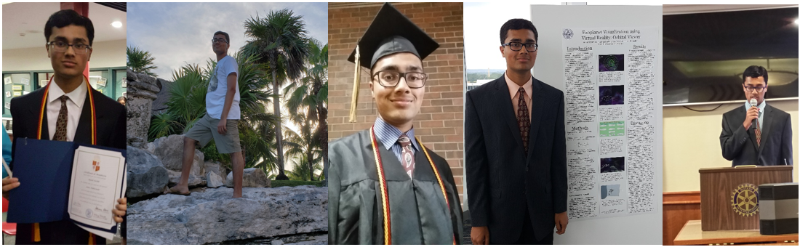
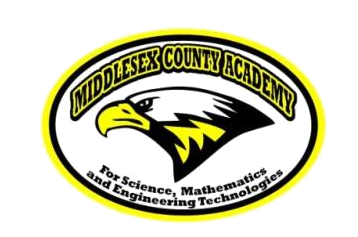

Ayush Parikh
I am a junior at the University of Pennsylvania studying chemical engineering, computer science, and engineering entrepreneurship. I have work experience in computational chemistry research, IT, and science tutoring.
Experience
Research Assistant
I am currently working on a computational chemistry and chemical engineering project under Dr. Aleksandra Vojvodic. The project focuses on investigating the catalytic properties of cobalt oxide (CoOx) materials for the oxygen evolution reaction (OER), an important half reaction for water electrolysis. The ultimate aim of this project is to determine which cobalt oxide materials could serve as suitable catalysts for the reliable production of clean hydrogen fuels. I worked on this project throughout the summer as part of a paid summer internship through the Vagelos Integrated Program in Energy Research (VIPER), and I have continued work this school year via independent study.
Information Technology Advisor (ITA)
I worked as an information technology advisor at my college dorm this school year. My responsibilities included helping students in setting up university Wi-Fi, installing university-supported anti-virus software, fixing any issues with the printers, and toubleshooting other technology-related issues.
Science Tutor
I tutored students in chemistry with a focus on thermodynamics, kinetics, and acid-base equilibria. I also engaged one-on-one with a student teaching physics with a focus on topics related to electricity and magnetism.
English Tutor
I worked for the Chinese company 24k Talk as an English teacher. I taught online English classes to elementary and middle school students and was also responsible for editing lesson power points to more closely resemble how native English speakers communicate. Finally, I am working on designing new lesson materials on topics such as biology, physics, mathematics, and geography.
SAT and ACT Tutor
I previously tutored high school students to help them prepare for the mathematics and English sections of both the ACT and SAT exams. While working at the tutoring center, I was also respnsible for filing study materials, preparing practice exams, and generating student copies of prep books.
Summer Researcher
I conducted an astrophysics and computer science research project for six weeks during the summer and was featured in an article on my high school's website as a result. The project I worked on was a virtual reality orbital viewer that modeled planetary systems, and it was built using the Unity game engine and the Oculus Rift VR headset. I was responsible for designing the GUI for the software, and I also added functionality to design custom solar systems with user-specified numbers of asteroids and planets.
Education
University of Pennsylvania

Middlesex County Academy High School
Graduated in the top 5 of the class with National Honor Society and Spanish Honor Society recognition

Skills
Check out my GitHub profile!
MATLAB, ASPEN Plus, Multisim, PSpice, AutoCAD, VASP, AWS
- Raspberry Pi (programming and interfacing with external microphone circuitry)
- PIC Microcontrollers - Programming with MPASM and mikroC
- Digital Circuits (AOI, combinational, and sequential logic, synchronized circuits)
- DC and AC Circuits (resistive circuits, RC circuits and various applications)

A short clip of an LED cube controlled by a counter circuit

Interests
Apart from being a student and a research assistant at the University of Pennsylvania, I enjoy spending my time reading, watching live sports, watching movies, and playing instruments such as the piano and the flute. Check out my YouTube channel for videos of my piano covers, and be sure to like and subscribe!
I am involved in numerous activites at Penn, including quiz bowl, a buzzer-based trivia competition in which two teams of four players play 20 tossup and corresponding bonus questions per round. I have attended numerous quiz bowl tournaments, both while playing in high school and while at Penn, and I am also involved in writing questions and helping to host tournaments. For example, I currently write for NHBB (the National History Bee and Bowl), and have helped host middle school tournaments at my high school (see the picture below). Learn more about quiz bowl by reading this article. Also, check out this article detailing my high school team's nationals participation during my senior year as well as this TV broadcast which aired before our team at Penn attended the 2018 Intercollegiate Championship Tournament at the Hyatt Regency O'hare in Rosemont, IL.
Honors
- Littlejohn Undergraduate Research Award - 2019
- 2nd Place Award at Regional ChemE Jeopardy Competition - 2019
- Dean's List - University of Pennsylvania - 2017 - 2018 and 2018 - 2019
- Recipient of Wayne Holiday Scholarship for Excellence in Education - Middlesex County Association of School Business Officials (MCASBO) - 2017
- Recipient of Academy Foundation Scholarship - Middlesex County Academy - 2017
- Top 10 in NJ - Middlesex County Academy - NJ Science League, Chemistry, Physics, and Environmental Science - 2015 - 2017
- 1st Place in School - Middlesex County Academy - United States Chemistry Olympiad - 2016
- 1st Place - Middlesex County Academy - Career and Technology Expo - 2016
- Top 10 in Nation - Middlesex County Academy - TSA T.E.A.M.S. Problem Solving Competition - 2016
- Earned First Degree Black Belt (Sho Dan) in Kaizen Karate Do - Elite Martial Arts - 2013